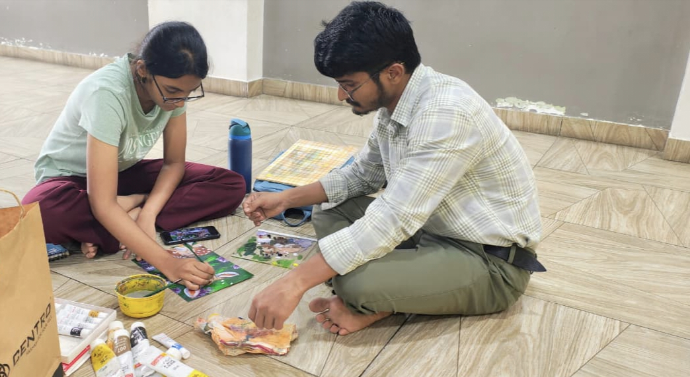

Drawing & shading
Live sketching, pencil shading, charcoal and doodle art.
ARTIST · EDUCATOR · CREATIVE MIND
A colourful world of sketches, paintings, crafts and creative learning—made with curiosity, patience and a love for art.

CREATIVITY HAS MANY FORMS
A SELECTION OF CREATIONS
From careful pencil details to bold colours and hands-on crafts, every piece tells its own story.
WAYS TO MAKE
Exploring different materials helps every artist find their own voice.
Live sketching, pencil shading, charcoal and doodle art.
Watercolour, canvas painting, mural painting and traditional art.
Clay art, sand art and all kinds of imaginative crafts.
ART IS FOR EVERYONE
Art classes are about more than the finished picture. They are a chance to experiment, build confidence, practise patience and discover the joy of making something your own.
Through demonstrations and hands-on activities, learners are encouraged to explore materials, trust their ideas and enjoy the process.
Let’s create together ↗HAVE AN IDEA?
For art classes, workshops, collaborations or to learn more about the work, get in touch.
READY TO CONNECT?